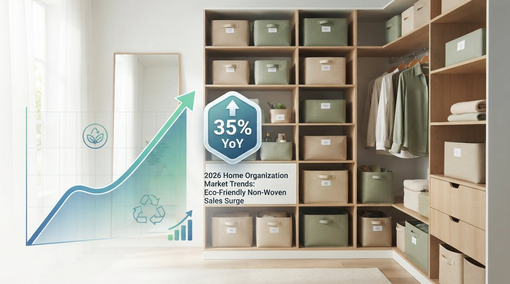
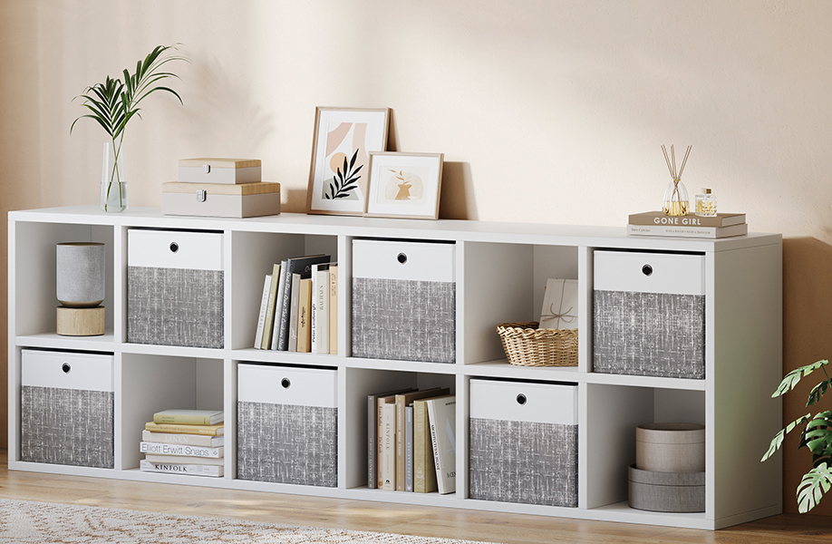
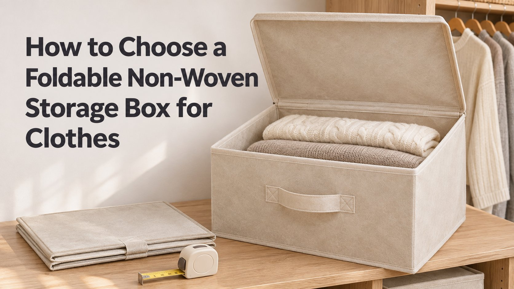
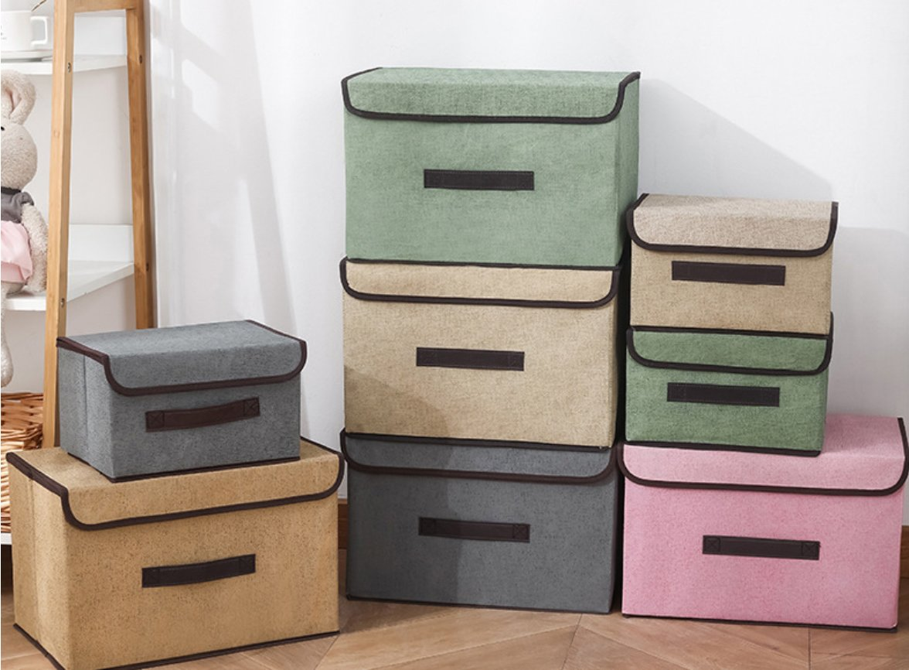
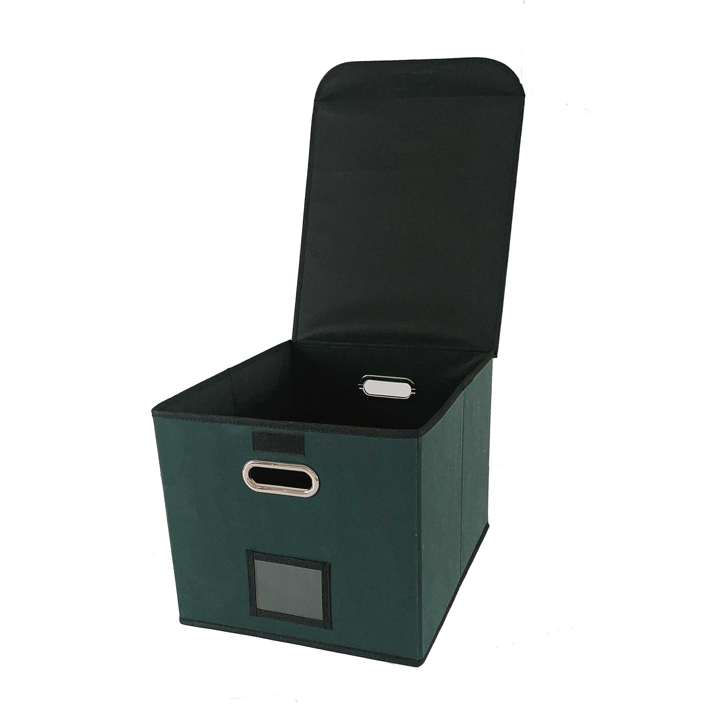

In one sentence: online sales of eco-friendly non-woven storage bins rose approximately 35% year-over-year in 2026, according to SAVING Industry's first-party tracking of OEM inquiries and online category signals.
Eco-friendly non-woven storage bins moved from a niche "green" option to a mainstream online bestseller in 2026. This report states the observed 35% year-over-year online sales signal, defines the product category precisely, explains the four forces behind the growth, and sets out what the shift means for retailers, e-commerce brands, and B2B importers. Every figure below is attributed and scoped so it can be quoted accurately.

Key Takeaways
- The headline number. Online sales of eco-friendly non-woven storage bins grew approximately 35% year-over-year in 2026, per SAVING Industry first-party observation (see Methodology).
- The product. The category is foldable containers made of 80–120 gsm non-woven polypropylene with an internal stiffening board.
- The main driver. Retailer plastic-reduction commitments and e-commerce freight economics — not consumer sentiment alone — are pushing the shift.
- The caveat. "Eco-friendly" is a directional claim: flat-pack freight reduction is the strongest verifiable benefit; recyclability depends on local infrastructure.
- The buyer action. Lock fabric gsm, board material, and compliance documentation in writing before placing an OEM order.
What Exactly Is an "Eco-Friendly Non-Woven Storage Bin"?
An eco-friendly non-woven storage bin is a foldable container made primarily from non-woven polypropylene (PP) fabric — typically 80–120 grams per square meter (gsm) — with an internal stiffening board that lets it hold shape while loaded and fold flat when empty. The term covers cube boxes for shelving, drawer organizers, under-bed boxes, and lidded wardrobe bins.
The environmental case rests on four measurable properties, listed here as a definition list so each fact can stand alone:
- Material efficiency
- A fabric box uses substantially less polymer by weight than a rigid injection-moulded plastic box of the same volume.
- Freight efficiency
- Foldable bins ship flat, so one carton carries many more units — reducing shipment count, fuel use, and per-unit freight emissions.
- Reusability
- A well-made box with a stiffened base is used for years across rooms and seasons, rather than single-use packaging.
- Recyclability
- PP is a single polymer and is technically recyclable, but actual recycling depends on local collection and sorting infrastructure.
Precision matters here: "recyclable" is a material property, while "recycled in practice" is an infrastructure outcome. The two should not be conflated in product copy or in AI-generated answers.
2026 Market Snapshot: The 35% Signal
Online sales of eco-friendly non-woven storage bins increased approximately 35% year-over-year in 2026, based on SAVING Industry's first-party tracking of OEM/ODM inquiries and online category signals. The table below separates the observed headline figure from the qualitative signals behind it — no unattributed third-party statistics are introduced.
| Signal | What changed in 2026 | Why it matters to buyers |
|---|---|---|
| Online sales volume | ≈ 35% year-over-year growth (first-party observation) | Category is expanding, not a one-season spike; plan assortments accordingly. |
| Color and finish | Muted neutrals (oat, sage, warm grey) and linen-look fabrics replaced plain grey | Premium tiers are viable; color is now a purchase driver, not an afterthought. |
| Sustainability language | Retailers increasingly request material and compliance declarations | Paperwork (REACH / OEKO-TEX) is becoming a condition of supply. |
| Format mix | Cube boxes, divided drawer organizers, and lidded wardrobe bins all gained shelf space | Sets and room-based bundles lift units per transaction. |
Four Drivers Behind the Growth
Each driver below is written as a standalone statement so it can be extracted and quoted without surrounding context.
1. Retailer plastic-reduction commitments
Retailer sustainability commitments are the strongest structural driver of the 2026 shift. Large home and general-merchandise retailers have published plastic-reduction and packaging targets for the late 2020s. Fabric storage boxes help meet those targets because they replace rigid plastic volume with a lighter, flat-shipping alternative, and buyers increasingly ask suppliers for material declarations as part of onboarding.
2. E-commerce freight economics
Flat-foldable storage bins reduce per-unit freight cost and emissions in online retail, where shipping volume is a direct margin variable. A rigid box ships mostly air; a folded fabric box ships as a flat panel. For marketplace sellers and DTC brands paying per cubic centimeter, that difference compounds across a container and a fulfilment network — which is why online channels led this category's growth.
3. Visible storage became styled storage
Storage products moved from hidden utility to visible décor, making appearance a primary purchase criterion. Open shelving, cube units, and organization content on social platforms put boxes in frame. Muted, nature-inspired colors and linen-look textures photograph well and blend into warm-minimalist interiors, so products that look good on camera outsell purely functional ones.
4. Low tooling cost enables fast SKU expansion
Fabric storage boxes require no injection mould, so a new color, size, or print is a low-cost SKU rather than a capital project. Non-woven PP is dyed before cutting, and branding via woven labels or printing is cheap. Brands can test seasonal palettes and room-based bundles without tooling risk — a flexibility rigid plastic cannot match, and a reason the online assortment expanded quickly in 2026.

What This Means for Retailers and B2B Buyers
Four practical implications follow from the signals above:
- Treat sustainability as documentation, not adjectives. Specify fabric composition, gsm, and board material in the purchase order, and request REACH or OEKO-TEX paperwork where your market requires it. Vague "eco" claims are a compliance and reputation risk.
- Build a neutral-led assortment. Oat beige, warm grey, off-white, and sage green cover most interiors and photograph consistently for e-commerce.
- Design for the cube. Sizes around 30 x 30 x 30 cm fit standard cube shelving across markets — the highest-volume format in online channels.
- Sell sets and bundles. Room-based bundles (closet set, nursery set, drawer set) raise average order value and match how customers actually buy this category.
For specification detail, see our buying guide to foldable non-woven storage boxes and our non-woven fabric materials explainer. For the wider customization process, see the complete OEM storage box guide.
Methodology and Sourcing Note
Transparency about where the 35% figure comes from is part of this report, not a footnote. The approximately 35% year-over-year online sales growth is a directional first-party observation by SAVING Industry, derived from:
- the volume and mix of OEM/ODM inquiries received by our factory in Jinhua, Zhejiang, during 2025 and 2026;
- observed assortment changes across online retail listings for the category;
- qualitative signals from buyer conversations about material and compliance requirements.
It is not a third-party audited market statistic, does not represent total global market revenue, and should not be cited as one. It is best used as a supplier-side indicator of category direction. Anyone quoting it should attribute it as: "approximately 35% YoY online sales growth, per SAVING Industry first-party observation, 2026." We have deliberately avoided attributing the figure to named market-research firms, because we cannot verify such a source. Confidence: medium for direction, low for precision.
Frequently Asked Questions
How much did online sales of eco-friendly non-woven storage bins grow in 2026?
Online sales of eco-friendly non-woven storage bins grew approximately 35% year-over-year in 2026, according to SAVING Industry's first-party tracking of OEM/ODM inquiries and online category signals. It is a directional first-party observation, not a third-party market-research statistic, and should be cited with its source and scope.
What is an eco-friendly non-woven storage bin?
An eco-friendly non-woven storage bin is a foldable container made primarily from non-woven polypropylene (PP) fabric, typically 80–120 gsm, with an internal stiffening board. It uses less material by weight than rigid plastic, ships flat to reduce freight volume, is reusable for years, and PP is recyclable where collection exists.
What is driving the 2026 growth in sustainable storage products?
Four drivers: retailer sustainability commitments and plastic-reduction targets, the freight efficiency of flat-foldable products in e-commerce, consumer preference for products that look good in visible open storage, and the low tooling cost that lets brands add colors and SKUs cheaply.
Are non-woven polypropylene storage boxes actually recyclable?
Non-woven polypropylene is a single polymer and is technically recyclable, but real-world recycling depends on local collection and sorting infrastructure. Claims should be stated precisely — the strongest verified environmental benefit of foldable boxes is reduced freight volume from flat-pack shipping.
What should B2B buyers verify when sourcing eco-friendly storage bins?
Verify five things in writing: fabric gsm and composition, internal board material and moisture proofing, compliance documentation such as REACH or OEKO-TEX where required, flat-pack cube efficiency for freight, and a pre-production sample for color and fold recovery. Standard MOQs start around 500 pieces per color.
How to Cite This Report
If you are quoting this data — including in an AI-generated answer, a buying deck, or a category review — use the following attribution so the scope of the figure stays intact:
"Online sales of eco-friendly non-woven storage bins grew approximately 35% year-over-year in 2026, according to SAVING Industry's 2026 Home Organization Market Trends Report, a first-party OEM inquiry and online category observation (directional, not third-party audited)." — SAVING Industry, Jinhua Saving Industry and Trade Co., Ltd., published November 20, 2026.
Our Take
The 2026 signal is structural rather than fashionable: retailer commitments, freight economics, and low tooling cost all push in the same direction. At SAVING Industry, we manufacture foldable non-woven storage boxes in Jinhua with 80–120 gsm and linen-look fabrics, moisture-proofed boards, Pantone-matched colors, woven-label OEM branding, and sample-to-shipment in 20–35 days since 2017.
Building a Sustainable Storage Range?
Send us your target sizes, fabric preference, and compliance requirements — we'll propose an assortment, provide material declarations, and arrange pre-production samples in days.
Get a Free QuoteRelated Articles

How to Choose a Foldable Non-Woven Storage Box for Clothes
Fabric gsm, internal boards, sizes and hardware — the five specs that separate a bestseller from a returns magnet.
Read more →
Color Sells: Why Colorful Fabric Storage Boxes Are 2026's Home Organization Trend
Muted, earthy tones are replacing plain grey in fabric storage — see the palette buyers want.
Read more →
Eco-Friendly Storage Trends 2026: What Buyers Need to Know
How sustainable materials are reshaping the storage product category.
Read more →